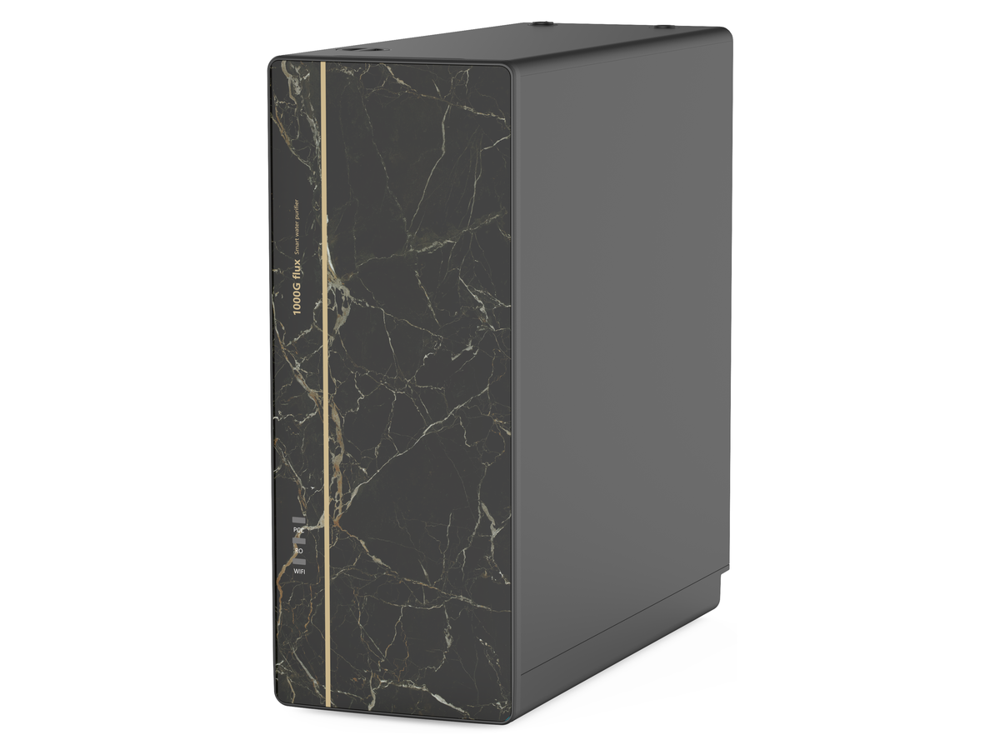

シンク下設置型
シンク下設置型RP-U07
400～600 GPDシンク下RO浄水器
SKU: RP-U07
MOQ：お問い合わせ時に確認
キッチン向けシンク下逆浸透浄水器および関連製品を、ブランドオーナーおよび販売代理店向けのOEM / ODMモデルとして卸売で供給します。
15モデル。仕様はモデル・ご注文ごとに確認済みです。
シンク下設置型400～600 GPDシンク下RO浄水器
SKU: RP-U07
MOQ：お問い合わせ時に確認
 シンク下設置型
シンク下設置型貯湯式加熱付きシンク下RO
SKU: RP-U08
MOQ：お問い合わせ時に確認
 シンク下設置型
シンク下設置型大容量前面アクセスRO浄水器
SKU: RP-U09
MOQ：お問い合わせ時に確認
 シンク下設置型
シンク下設置型3カートリッジRO浄水器
SKU: RP-U11
MOQ：お問い合わせ時に確認
 シンク下設置型
シンク下設置型工具不要の引き出し式カートリッジROシステム
SKU: RP-U01
MOQ：お問い合わせ時に確認
 シンク下設置型
シンク下設置型デュアルドライブ大流量ROシステム
SKU: RP-U06
MOQ：お問い合わせ時に確認
 シンク下設置型
シンク下設置型コンパクト2カートリッジRO浄水器
SKU: RP-U12
MOQ：お問い合わせ時に確認
 シンク下設置型
シンク下設置型スリムなデュアルアウトレットRO浄水器
SKU: RP-U14
MOQ：お問い合わせ時に確認
 シンク下設置型
シンク下設置型シンク下設置型水素水RO浄水器
SKU: RP-U04
MOQ：お問い合わせ時に確認
 シンク下設置型
シンク下設置型瞬間加熱蛇口と冷水付きRO
SKU: RP-U02
MOQ：お問い合わせ時に確認

シンク下設置型大容量家庭用RO浄水器
SKU: RP-U03
MOQ：お問い合わせ時に確認
 シンク下設置型
シンク下設置型コンパクト2カートリッジROプラットフォーム
SKU: RP-U05
MOQ：お問い合わせ時に確認
 シンク下設置型
シンク下設置型シンク下設置型冷却ユニット
SKU: RP-U15
MOQ：お問い合わせ時に確認
 シンク下設置型
シンク下設置型ステンレス製瞬間加熱蛇口
SKU: RP-U16
MOQ：お問い合わせ時に確認
 シンク下設置型
シンク下設置型ツインハウジング大流量プレフィルター
SKU: RP-U17
MOQ：お問い合わせ時に確認